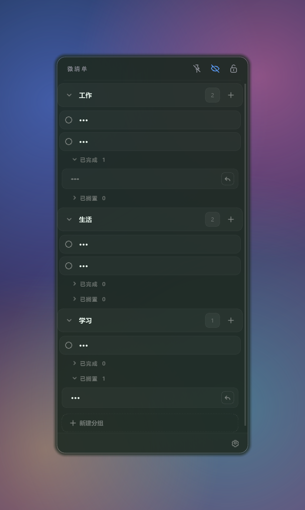
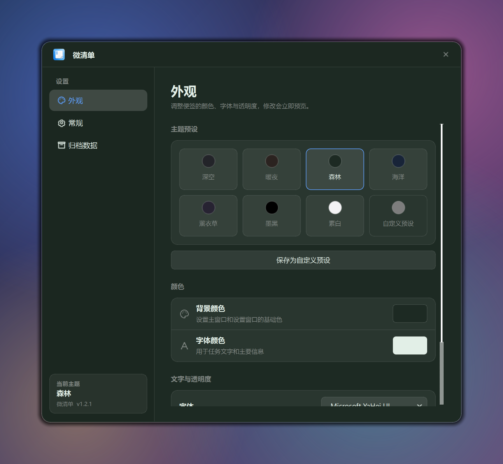
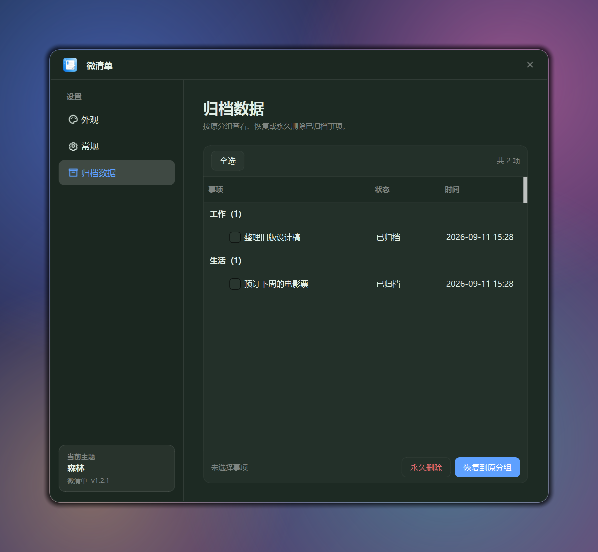
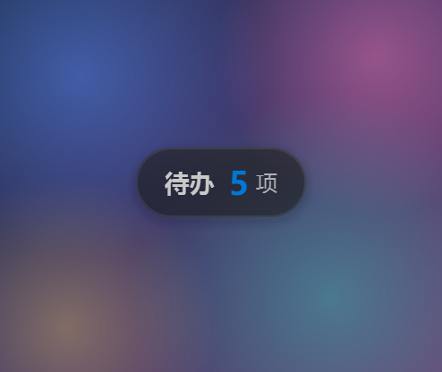

半透明便签
无边框、普通窗口层级，背景透明，可以看见桌面壁纸。
一个够用就好的桌面便签，不多一分复杂。
无边框、普通窗口层级，背景透明，可以看见桌面壁纸。
按分组整理任务，长按分组标题或任务即可拖动排序。
点任务左侧圆点标记完成，双击文字直接编辑，回车保存。
二级列表折叠收纳，一键把事项恢复回主列表。
移除先进入归档，可按原分组查看，批量恢复或永久删除。
7 套主题预设，颜色、字体、字号、背景透明度都能改，还能存为自定义预设。
界面语言可在简体中文与 English 之间切换。
锁定后隐藏编辑控件避免误改；隐私模式一键隐藏全部任务文本。
空闲几秒自动收成屏幕边缘的细条，鼠标移入展开「待办 N 项」胶囊，托盘常驻。
任务存在本机 SQLite 数据库，关掉重开还在，还可设置开机自启。
点击任意截图可放大查看。




下载 Windows 安装包，双击即装即用，无需配置任何环境。